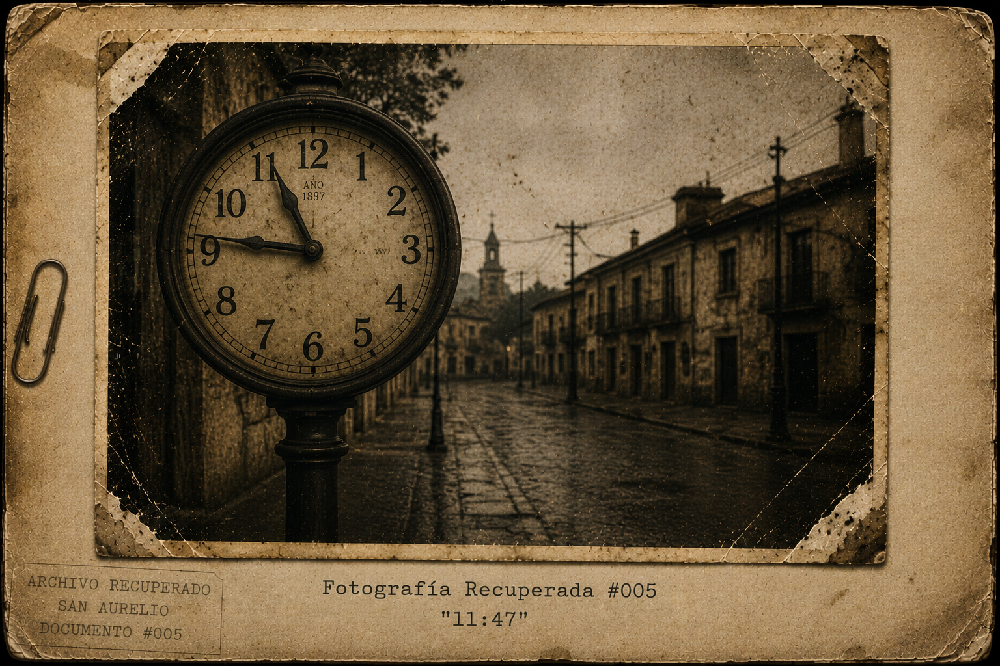

ARCHIVO RECUPERADO #001
Procedencia: Desconocida.
Fecha de recuperación: Desconocida.
Estado del documento: Parcialmente conservado.
Observaciones
Entre los documentos relacionados con San Aurelio, este fue uno de los pocos que permaneció intacto.
No contiene firma. No contiene fecha. No menciona quién lo escribió.
Algunas páginas presentan daños por humedad y fragmentos imposibles de recuperar.
Sin embargo, una parte importante del contenido logró conservarse.
Todas las referencias encontradas apuntan hacia una misma persona.
Una niña llamada Irene.
Transcripción iniciada.
SAN AURELIO
Volumen I
Las voces que nadie escuchó
Capítulo 0
Antes del Silencio
En San Aurelio nadie hablaba de las once cuarenta y siete.
No porque fuera una hora importante.
No porque hubiera ocurrido algo especial.
Al menos eso decían.
Sin embargo, cuando el reloj de la plaza marcaba las 11:47, algunas personas evitaban mirarlo.
Otras cerraban las cortinas. Algunas cambiaban de tema. Y unas pocas fingían no haber escuchado nunca hablar de ello.
Carlos era una de ellas.
Pero eso fue después. Mucho después.
Porque hubo un tiempo en que las once cuarenta y siete no significaban nada.
Un tiempo en que los niños todavía corrían por la plaza.
Un tiempo en que las personas todavía sonreían sin fingir.
Un tiempo en que San Aurelio parecía una ciudad normal.
O al menos eso creían.

La niña que escuchaba demasiado
Irene siempre intentaba evitar las grietas.
No porque creyera que traían mala suerte. Ni porque alguien se lo hubiera dicho.
Simplemente le parecían tristes.
Cada vez que veía una grieta en el suelo imaginaba que algo había intentado romperse y no lo había conseguido del todo.
Por eso movía el manubrio de la bicicleta de un lado a otro. Esquivándolas. Como si pudiera ayudarlas.
Aquella mañana había encontrado diecisiete.
Diecisiete grietas. Dos perros. Tres gatos. Y una nube que parecía un conejo.
Irene sonrió. Era importante llevar la cuenta de esas cosas, porque los adultos siempre estaban demasiado ocupados para hacerlo.
Pedaleó despacio por la plaza. Todo parecía normal, pero Irene sabía que las cosas podían parecer normales sin estarlo.
Lo había aprendido en casa.
Su madre sonreía cuando había visitas. Su padre preguntaba cómo estuvo la escuela.
Y durante unos minutos todo parecía estar bien.
Luego las puertas se cerraban.
Y el silencio volvía a romperse.
Al pasar frente a la panadería levantó una mano.
Irene: —Buenos días, señor Carlos.
Carlos respondió desde la ventana.
Carlos: —Buenos días, Irene.
Ella siguió avanzando.
No sabía que Carlos la observó durante varios segundos después de verla partir.
No sabía que a veces una simple sonrisa podía doler.
Más adelante, junto a la plaza, encontró a Héctor, sentado en la misma banca y rodeado de palomas.
Irene: —Buenos días, señor Héctor.
Héctor: —Buenos días, pequeña.
Irene: —¿Y María?
La pregunta salió antes de que Irene pudiera detenerla. Entonces recordó. María ya no estaba.
Irene: —Lo siento.
Héctor sonrió apenas. Una sonrisa pequeña. Cansada.
Héctor: —No te preocupes.
Mientras se alejaba, Irene miró hacia atrás. Héctor seguía allí, hablando con las palomas como si fueran las únicas que todavía lo escuchaban.
Y por alguna razón eso le dio tristeza.
No una tristeza grande. Solo una pequeña. De esas que se quedan pegadas al corazón durante el resto del día.

El hombre que seguía horneando pan
Carlos siempre preparaba una barra de pan de más.
Nadie la compraba. Nadie la pedía. Nadie sabía siquiera que existía.
Aun así la hacía cada mañana.
La colocaba sobre la misma bandeja. En el mismo rincón. A la misma hora.
Y después fingía olvidarla.
Aquella mañana ocurrió lo mismo.
Sacó las bandejas del horno. El aroma del pan llenó la panadería.
Y allí estaba. La barra de pan extra. Esperándolo.
Carlos permaneció inmóvil unos segundos. Luego la tomó entre las manos. Todavía estaba caliente.
Por un instante cerró los ojos.
Y recordó.
Una niña sentada sobre el mostrador. Las piernas balanceándose en el aire. Las manos cubiertas de harina. Una risa.
La hija de Carlos, en el recuerdo: —Papá, esta tiene forma de pez.
Carlos sonrió sin darse cuenta. En el recuerdo sí. En el recuerdo todavía sabía sonreír.
Carlos, en el recuerdo: —Los peces no tienen esa forma.
La niña: —Este sí.
Carlos: —¿Y cómo lo sabes?
La niña: —Porque él me lo dijo.
Carlos: —¿Quién?
La niña: —El pez.
Carlos soltó una pequeña carcajada. La misma que hacía años no salía de su garganta.
Después abrió los ojos.
La panadería volvió a quedarse en silencio.
La niña desapareció. La risa desapareció. El recuerdo desapareció.
Y solo quedó el pan. Todavía caliente. Todavía intacto.
Todavía esperando a alguien que nunca volvería a buscarlo.
Carlos bajó la mirada y colocó la barra en el rincón de siempre.
Porque algunas personas entierran a sus muertos.
Carlos no.
Carlos los esperaba.

La mujer que todavía esperaba
Mily siempre llegaba antes que los demás.
No porque fuera necesario. No porque alguien se lo pidiera.
Simplemente le gustaba escuchar la escuela cuando todavía estaba vacía.
A esa hora los pasillos no tenían ruido. Las puertas permanecían cerradas. Las sillas seguían ordenadas.
Y durante unos minutos todo parecía estar en paz.
Abrió el aula, dejó los cuadernos sobre el escritorio y observó las filas de pupitres vacíos.
Treinta y dos asientos. Treinta y dos nombres. Treinta y dos historias.
Algunas felices. La mayoría no.
Mily conocía a sus alumnos mejor de lo que ellos imaginaban.
Sabía quién llegaba sin desayunar, quién se dormía en clase porque no podía descansar en casa y quién sonreía para ocultar que algo iba mal.
Por eso enseñaba.
Porque alguien tenía que escuchar.
Aunque fuera un poco. Aunque fuera tarde. Aunque no siempre pudiera ayudar.
Tomó una hoja del escritorio. Era un dibujo olvidado por uno de los niños: una casa, un árbol, un perro y una familia tomada de la mano.
Mily observó el papel durante varios segundos. Luego sonrió.
Una sonrisa pequeña. Melancólica.
Porque hubo un tiempo en que ella también imaginaba algo parecido.
Una casa. Una familia. Un futuro.
Víctor solía hablar de ello. Antes. Cuando todavía reía.
Antes de que la frustración se instalara en la casa como una visita que nunca quiso marcharse.
Entonces escuchó pasos en el pasillo. La escuela despertaba.
Y junto con ella regresaba algo que Mily jamás había perdido del todo.
Esperanza.
Pequeña. Frágil. Pero viva.
Hasta que apareció Irene.
Mily la observó en silencio.
Cuando veía a Irene sentía dos emociones opuestas: tristeza por todo aquello que nunca tendría, y alivio por todo aquello que todavía podía proteger.
Mily: —Irene.
Irene: —¿Sí, profesora?
Mily: —¿Qué estabas mirando en la plaza esta mañana?
Irene parpadeó. Luego miró hacia la ventana. Hacia los árboles.
Irene: —No lo sé.
Aquella respuesta hizo que un escalofrío recorriera la espalda de Mily.
Porque Irene no parecía estar mintiendo. Parecía confundida.
Como si realmente hubiera visto algo.
Algo que todavía no lograba comprender.

La mujer de las flores
Esmeralda regaba las flores todas las mañanas.
Siempre a la misma hora. Siempre con la misma regadera. Siempre frente al mismo camino.
Algunas personas pensaban que era una costumbre. Otras creían que era una manía.
La verdad era más sencilla.
Ella estaba esperando.
Llevaba años esperando. Y aun así nunca parecía impaciente.
Irene frenó junto a la acera.
Irene: —Buenos días, señora Esmeralda.
Esmeralda: —Buenos días, pequeña.
Irene: —Sus flores están bonitas.
Esmeralda sonrió.
Esmeralda: —Eso dicen ellas.
Irene: —¿Las flores hablan?
Esmeralda: —A veces.
Irene: —Yo nunca las escuché.
Esmeralda: —Porque todavía hablan demasiado bajito.
Irene observó los pétalos. Parecía estar considerando seriamente aquella posibilidad.
Irene: —¿Sigue esperando a su hijo?
La pregunta salió sin malicia. Solo curiosidad.
Esmeralda permaneció en silencio unos segundos.
Esmeralda: —Sí.
Irene: —¿Y cuándo volverá?
La mujer observó el camino. Aquel mismo camino que llevaba años mirando.
Esmeralda: —No lo sé.
Irene: —¿Y si nunca vuelve?
Por primera vez algo cambió en la expresión de Esmeralda.
No tristeza. No dolor.
Algo más difícil de explicar.
Esmeralda: —Hay personas que se marchan.
Irene asintió.
Esmeralda: —Y hay personas que simplemente dejan de estar aquí.
La niña frunció el ceño. No entendió. Y Esmeralda tampoco intentó explicarlo.
Todavía no.
Irene: —Nos vemos mañana.
Esmeralda: —Si el camino lo permite.
Irene: —¿Qué camino?
Esmeralda sonrió.
Esmeralda: —Exactamente.
Cuando Irene desapareció al final de la calle, Esmeralda volvió a mirar las flores.
Entonces dejó de sonreír.
Muy lentamente.
Como quien reconoce un sonido antiguo.
Y por primera vez en mucho tiempo miró hacia los árboles.
Porque durante un instante tuvo la sensación de que alguien estaba observando desde allí.
Y eso no ocurría desde hacía muchos años.

Aquella tarde Irene levantó la vista hacia el reloj de la plaza.
Las agujas marcaban exactamente las 11:47.
No le dio importancia.
Era solo una hora.
Una hora cualquiera.
O eso creyó.

La Luz
Aquella noche Irene no podía dormir.
Los gritos habían vuelto.
No eran más fuertes que otras veces. No eran diferentes.
Quizá eso era lo peor.
La costumbre.
Las voces atravesaban las paredes, subían por las escaleras, se colaban bajo la puerta de su habitación y terminaban allí.
Sentadas junto a ella.
Como visitantes que nunca se marchaban.
Irene permaneció inmóvil sobre la cama, abrazando sus rodillas.
No sabía exactamente qué esperaba.
Solo sabía que no quería escuchar más.
Entonces ocurrió.
Algo pequeño.
Tan pequeño que cualquier adulto lo habría ignorado.
El ruido desapareció.
No los gritos. No la casa. No la noche.
La sensación.
Como si alguien hubiera abierto una ventana invisible y hubiera dejado escapar parte de aquella tristeza.
Irene levantó la cabeza.
Y la vio.
Una luz. Pequeña. Lejana. Entre los árboles.
No brillaba demasiado. No parecía especial. Ni siquiera parecía hermosa.
Parecía sola.
La niña se acercó a la ventana.
La luz no se movió. No intentó acercarse. No intentó llamar su atención.
Simplemente estaba allí.
Esperando.
Y por alguna razón, eso hizo que Irene sintiera más pena que miedo.
Irene, a la luz: —¿Estás perdida?
La luz no respondió.
Pero Irene tuvo la extraña sensación de que alguien la estaba escuchando.
No observando.
Escuchando.
Como si aquella pequeña luz prestara atención a cosas que los demás ignoraban.
A los silencios. A las lágrimas. A las palabras que nunca llegaban a decirse.
La luz tembló.
Muy suavemente.
Y durante un instante Irene sintió algo.
No una voz. No una imagen. No un recuerdo.
Una emoción.
Soledad.
Tan profunda que parecía no tener fondo.
La niña contuvo la respiración.
Porque aquella soledad no era suya.
Y sin embargo, la entendía.
Irene: —Yo también me siento sola a veces.
La luz volvió a temblar.
Más fuerte esta vez. Como una estrella a punto de apagarse.
Y entonces ocurrió algo extraño.
La tristeza desapareció. No por completo. Solo un poco.
Como si compartirla la hubiera hecho más ligera.
Irene: —No quiero que estés sola.
El viento dejó de moverse. Los árboles quedaron inmóviles. La noche entera pareció escuchar.
Y durante un instante Irene sintió algo cálido. Algo parecido a un abrazo. Algo parecido a una respuesta.
Pero sin palabras.
Porque aquella luz no hablaba.
Nunca habló.
Solo escuchaba.
Entonces Irene hizo una promesa.
No sabía a quién. No sabía por qué. Solo sabía que quería hacerlo.
Irene: —Te acompañaré.
Irene: —Y cuando ya no puedas seguir brillando...
Irene respiró profundamente.
Irene: —Yo lo haré por ti.
Durante un segundo la luz brilló un poco más.
Y entonces mostró algo.
Solo un instante. Solo un fragmento.
Una bicicleta.
Pequeña. Abandonada. Cubierta por hojas secas.
Después desapareció.
La luz volvió a ser solamente una luz.
Irene frunció el ceño.
No entendió lo que había visto.
Y la noche tampoco le ofreció respuestas.
Solo silencio.
Un silencio extraño.
Un silencio que parecía estar esperando algo.
O a alguien.

El regreso del recuerdo
Carlos salió de la panadería.
Irene permanecía inmóvil frente a los árboles.
La luz seguía allí.
Pequeña. Silenciosa. Triste.
Por un instante nadie se movió.
Ni el viento. Ni las hojas. Ni las palomas.
La ciudad entera parecía estar escuchando.
Entonces ocurrió.
La luz tembló.
Y durante apenas un segundo mostró algo.
No una imagen completa. No un recuerdo.
Solo un fragmento.
Una bicicleta.
Pequeña. Abandonada. Cubierta por hojas secas.
Y luego desapareció.
La luz volvió a ser solamente una luz.
Irene frunció el ceño.
No entendía lo que acababa de ver.
Carlos sí.
O al menos creyó hacerlo.
Porque durante años había intentado olvidar aquella bicicleta.
Durante años había intentado convencerse de que nunca existió.
Pero allí estaba.
Otra vez.
El hombre sintió que el aire abandonaba sus pulmones.
Dio un paso atrás.
Luego otro.
La plaza volvió a moverse. Las hojas volvieron a caer. Las palomas levantaron vuelo.
El mundo siguió girando.
Como si nada hubiera ocurrido.
Como si nunca hubiera ocurrido.
Pero Carlos sabía que no era cierto.
Porque ya había visto aquella luz una vez.
Muchos años atrás.
La última vez que apareció...
su hija todavía estaba viva.
Y esa noche, por primera vez en mucho tiempo, Carlos tuvo miedo de recordar.
Muy lejos de allí, entre los árboles, la luz observó la ciudad.
Y la ciudad pareció observarla de vuelta.
Como dos viejos conocidos que llevaban demasiado tiempo separados.
Entonces la oscuridad regresó.
Y San Aurelio volvió a guardar silencio.
No todas las fotografías cuentan la verdad.
Algunas solo recuerdan lo que ya no está.
Fin del Capítulo 0 — Antes del Silencio